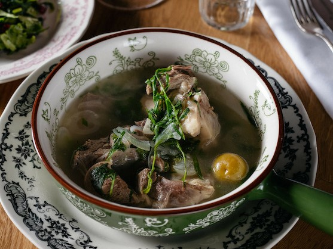
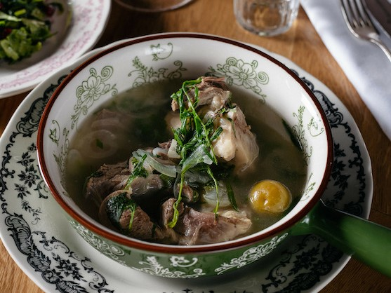

Хит меню
1390 ₽
Чакапули из ягненка
В чакапули много разнообразной зелени, но главной составляющей, наряду с мясом, является тархун (эстрагон), который превосходно сочетается с молодой бараниной, придавая ей неповторимую пикантность
Хит меню
1390 ₽
В чакапули много разнообразной зелени, но главной составляющей, наряду с мясом, является тархун (эстрагон), который превосходно сочетается с молодой бараниной, придавая ей неповторимую пикантность
1320 ₽
Хрустящая, зажаристая корочка и нежное сочное мясо — вот секретная формула, которая никого не оставит равнодушным.
660 ₽
Аппетитный, румяный, сочный цыпленок с пикантно-сливочным соусом. Подается на стол прямо в сковороде, также к нему идет лаваш.
660 ₽
Виноградные листья — прекрасный природный контейнер, позволяющий не только сохранить сочность рыбы при запекании, но и обогатить ее приятными вкусовыми оттенками